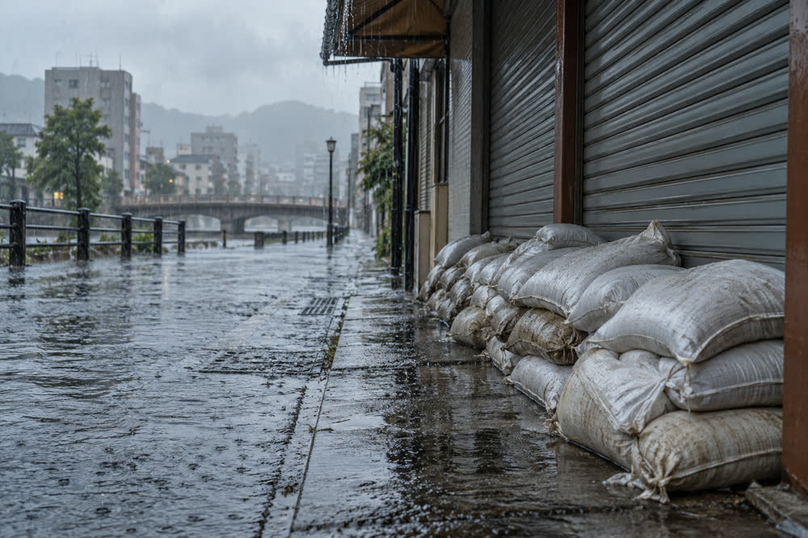

LIVE
Typhoon No. 21 live: evacuation instruction for four districts as the storm nears Harukawa
The typhoon is expected to pass about 30 km west of the city around 04:00 on Monday. Storm and storm surge warnings are in force, trains stop this evening and 24 shelters are open. The latest updates are below, newest first.